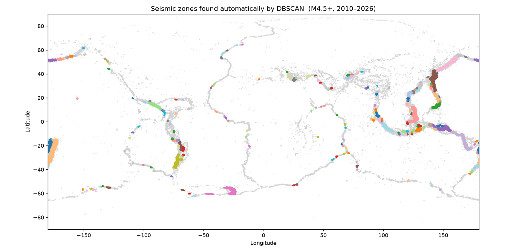
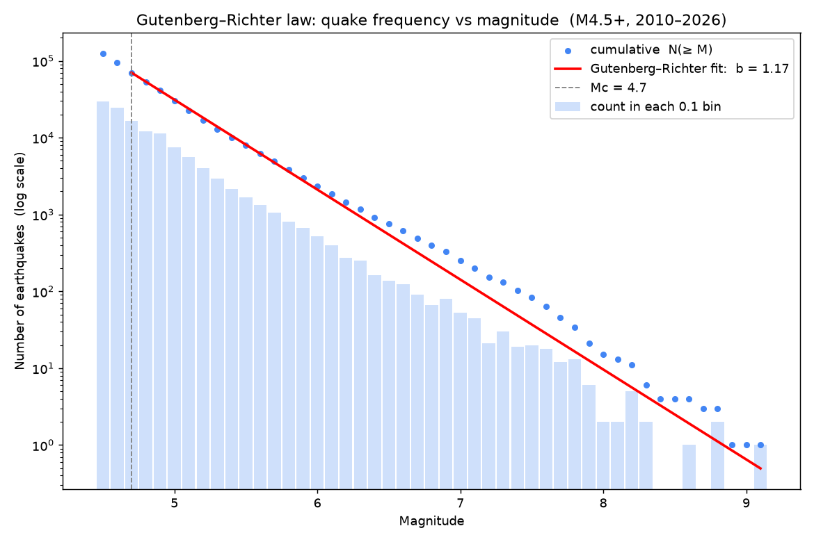
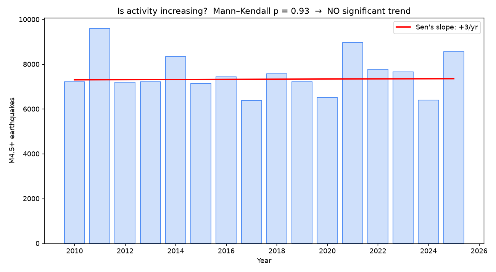
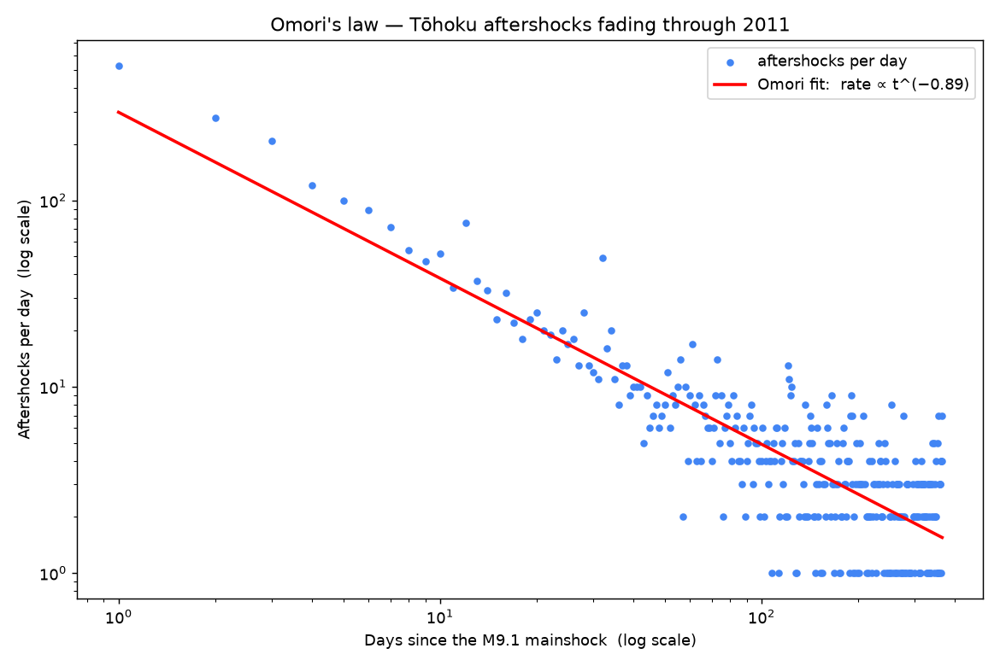
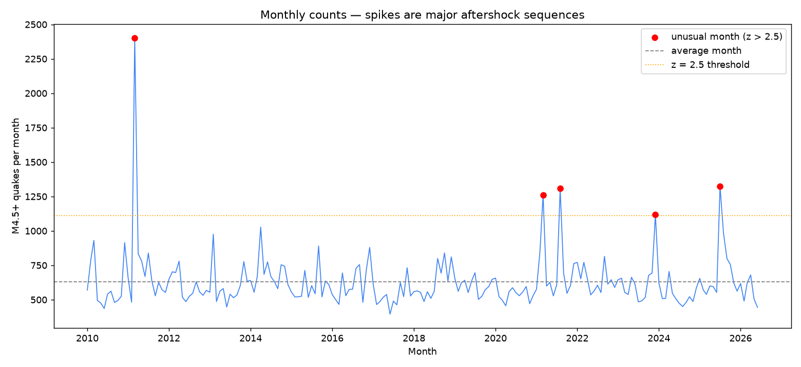
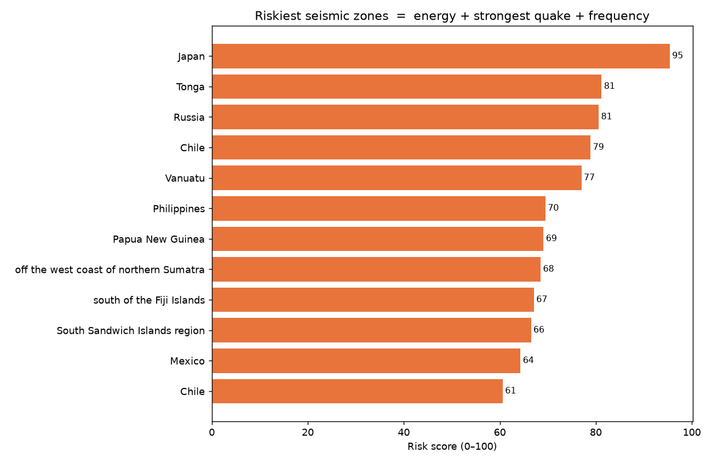

Where the Earth shakes, and what the shaking tells us.
QuakeScope takes 124,479 real earthquakes from the United States Geological Survey and turns them into clear answers. Where are the danger zones? Are quakes really getting more frequent? Which few events matter most? Explore it on the map, or read the Findings to see what the data revealed.
The charts our analysis produced, each explained in plain language.

We let an algorithm group quakes that sit close together, with no hints from us. It drew the Pacific Ring of Fire on its own. Each colour is one zone it discovered; the grey dots are scattered quakes that did not belong to any dense zone.

This counts how many quakes happen at each size. On a chart where each step down means ten times more, the points fall on a straight line. That straight line is a real law of nature: for every step up in magnitude there are about ten times fewer quakes. Our slope of 1.17 is right where it should be.

Each bar is one year of quakes. The red line is almost flat, and a proper statistical test agrees there is no real upward trend. The common feeling that earthquakes are on the rise comes from better sensors and more news coverage, not from the planet shaking more.

After the huge 2011 Japan quake, aftershocks came fast at first and then tailed off along a smooth curve. This pattern, called Omori's law, is so reliable that the scattered dots line up neatly along it.

Most months see a normal number of quakes. The red dots mark months that stood far above normal. The tallest spike is March 2011, the month the Japan quake and its thousands of aftershocks struck.

We scored each zone using three things: how much total energy it releases, how strong its biggest quake was, and how often it shakes. Japan comes out on top, followed by Tonga, Kamchatka, Chile and Vanuatu.
I am a 19 year old data scientist finishing a B.Sc. (Hons) in Data Science at the University of Hertfordshire, Singapore campus, graduating in November 2026 with First Class Honours (GPA 4.09). I enjoy turning messy, complicated data into clear and useful answers, which is exactly what QuakeScope does. I built it to practise the full journey from raw data all the way to a website like this one.
GitHub LinkedIn bquan1406@gmail.com
Open to data science and machine learning roles.